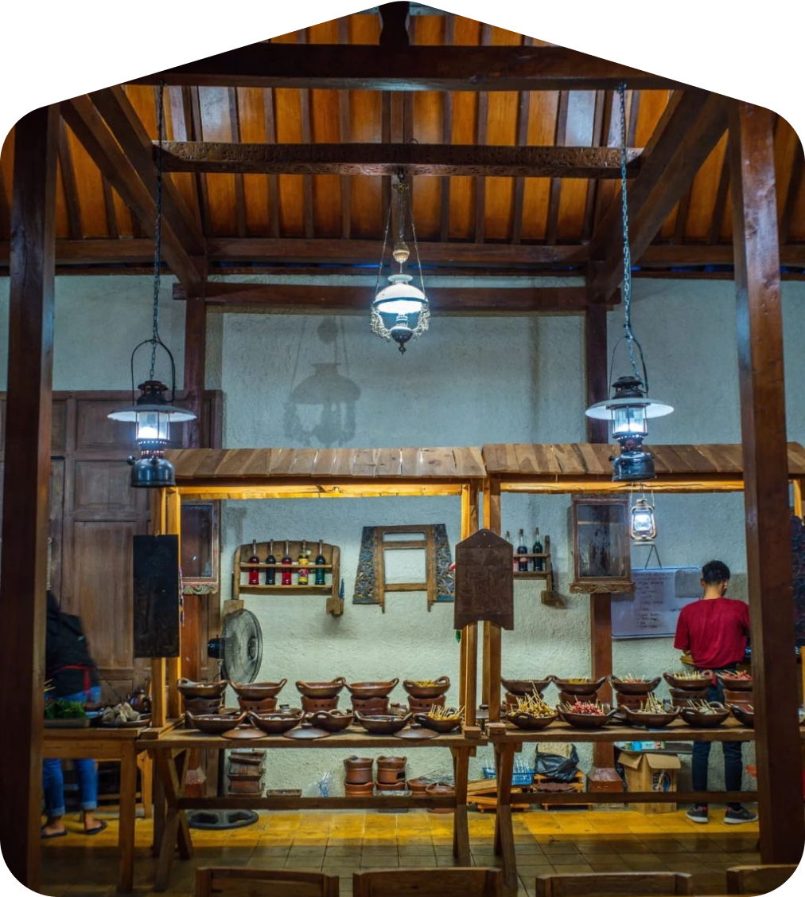

Location
Jl. kemangkun 25, purwokerto, jawa tengah
Open Hours
Setiap hari 07:00 - 23:00
Reservation
sakinihbakawn89@gmail.com

The Story
Angkringan Sarinih Terinspirasi dari kebiasaan nongkrong sederhana, mereka menciptakan angkringan dengan konsep modern yang tetap ramah kantong. Mengusung nama "Sarinih," yang berarti "mari kesini."
2022
Angkringan Sarinih lahir pada tahun 2022 dari semangat kebersamaan sekelompok mahasiswa Universitas Telkom Purwokerto yang ingin menghadirkan tempat nongkrong sederhana namun berkesan.